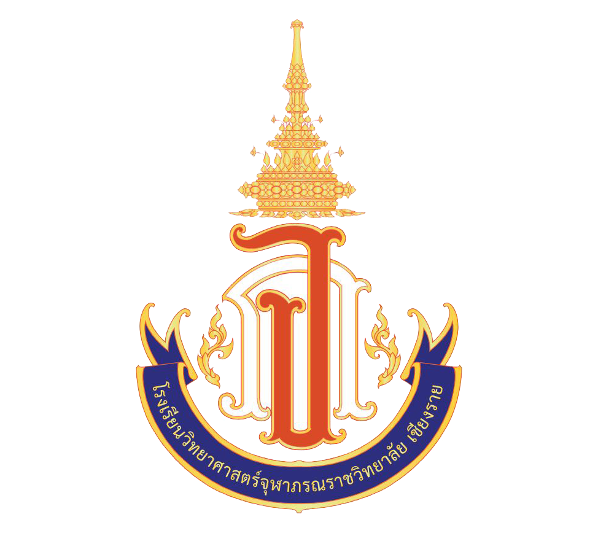

Portforioüëçüëçüëç
My interest in computers began when I was only 8 years old, when I first used a computer. At that time, we had a home computer. It was a very interesting device. During the weekends, I spent most of my time trying out the possibilities that this device could do, whether it was the operation of various programs or trying out Command Prompt, which made me realize how amazing these possibilities were. At that time, being able to use the commands cd\ netsh and wlan show profile keng_Wifi key = clear made me feel like a hacker and tried to hack the Nasa website, which they said kept the secrets of aliens, by trying to edit html, which I learned roughly from YouTube. That was the time when I felt the fun of learning and understanding computers and technology.
When I entered Mathayom 2, I joined my first handicraft competition in the middle level robot building competition with 2 seniors in Mathayom 3. In that competition, I had the duty of programming a robot to perform a mission in a simulated situation, which was a land that was too difficult for humans to help the victims. The robot would have to face difficult obstacles. The robot would have to automatically help the victims without any control or assistance from humans. The robot must be durable and smart enough to move different colored rescue equipment into the robot at once and place it in the designated spot, or the slot with the color that matches the rescue equipment. I felt very proud and had a lot of fun programming the robot to automatically help the victims. Even though our team encountered many obstacles, such as the rotation angle sensor being broken, strange bugs, or dust stuck on the wheels, we were able to get through it. Even though our team didn't win in that competition, I received both experience and advice that I can use in the future, so I don't feel sorry for losing that competition.
Later, when I was in the 5th grade of high school, I did a project on developing an AI that works on the image classification process, separating and classifying objects from microscopic images. I learned about the process of data augmentation, which is the process of increasing the amount of data, and about various algorithms to experiment with to find out which algorithm is most suitable for this type of work. Another project that I intended to develop and had a lot of fun with was Era Odyssey, an idle game that is packed with geological knowledge. I designed and planned this game and developed it with my friends. It gave me knowledge in game creation and programming in C#, but that's not all. I'm also interested in web development and SketchUp. From my long experience, I finally know that this is the path I'm going to take.
About Me
Achirawit Prasom was born on December 29, 2005. He aspires to be a game developer and the strongest
stand user. For that, he must study at King Mongkut's University of Technology Thonburi and become a
godfather in 4 years.
Before that, he had created many achievements, both creating AI to compete internationally and creating an
idle game to compete nationally. He also easily won a gold medal. Even though my father was burned
to death by the sun, I will be the one to uphold justice and make my father proud. With love and longing.
Achirawit Prasom
Skills

Education

Contact
F : Achirawish Prasom
IG : jojillst
Gmail : Achirawit.pras@kmutt.ac.th